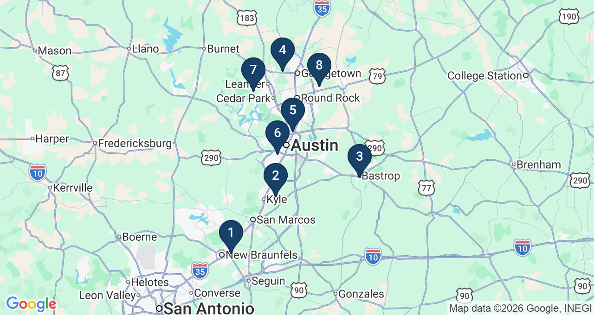
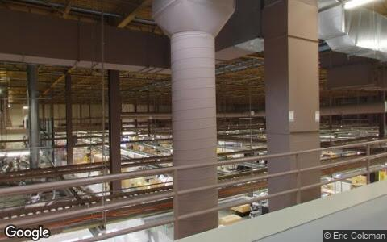
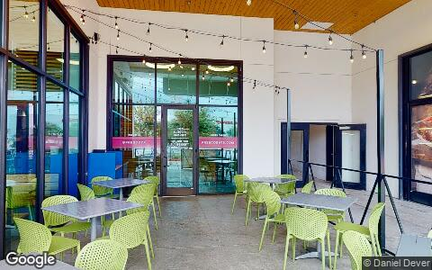
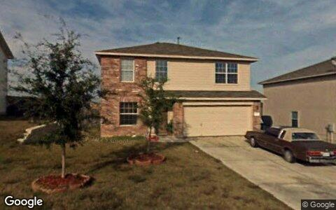
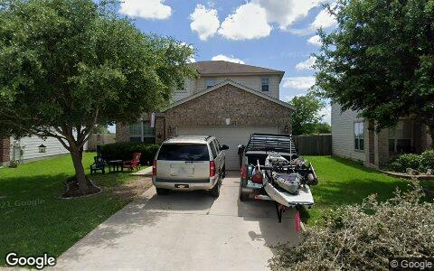
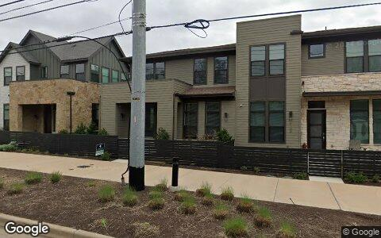
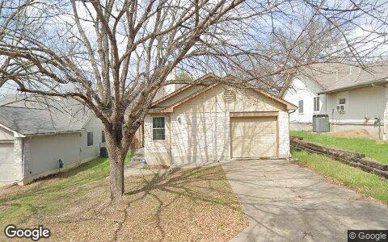

This Issue August 2026 edition
Flip resales are contracting twice as fast as investor buying, and at a lower price point
Flip resales came in at 132 this edition against 230 a year ago, a far steeper fall than the 1,219 vs 1,411 decline in investor purchases overall. The median flip resale slipped to $330,106 from $406,442 a year ago and $367,332 in the prior period. Single-family flips cleared at a median $144/sqft, while investor single-family purchases ran $248/sqft, so the exit channel is skewing to cheaper, smaller product than the acquisition pool. Lifetime records on the 8,559 flippers here show a median $6,500 profit per flip and 28% net-negative, leaving little cushion at this spread.
Investor Playbook
What this issue's numbers suggest checking, by investor type. Observations from recorded data — not investment, legal, or tax advice.
Price to a landlord exit, not a flip exit
Underwrite to $330,106 and a nine-month hold
Basis, not price, is where the outer zips pay
Fill the gap the 40 recorded loans left
Retail and small multifamily carry the non-residential flow
Factoids
Numbers from this period a practitioner would repeat to a colleague. Each computed directly from recorded instruments.
40 private loans — Recorded private loans this edition, median $260,900
207 seller-financed notes — New seller-financed notes recorded, median $285,000
19% out of state — Out-of-state share of investor purchases, 232 deals at a median $473,646
14 assignments — Wholesale assignments surfacing on recorded deeds, median spread $409,220
$418,950 median buy — Median investor purchase price this edition
2,823 units added — Units added by 1,415 local landlords since the last data drop
Market Activity — Investor Purchases
Monthly count of investor purchases of MSA properties (left axis) and the median purchase price (right axis), trailing 13 months. The most recent month can grow up to ~15% as late recordings arrive.

Where the Money Went
The geography of the period's investor activity: which zip codes saw the most recorded deals, and the largest individual transactions at street level.
The 8 busiest zip codes for investor deals

| # | Zip | Area | Purchases | Flips | Median buy |
|---|---|---|---|---|---|
| #1 | 78130 | NEW BRAUNFELS | 70 | 13 | $373,700 |
| #2 | 78640 | Kyle | 48 | 9 | $277,892 |
| #3 | 78602 | Bastrop | 51 | 3 | $201,362 |
| #4 | 78628 | Georgetown West | 44 | 8 | $439,166 |
| #5 | 78752 | Highland | 46 | 1 | $3.1M |
| #6 | 78745 | South Austin / Westgate | 38 | 6 | $473,480 |
| #7 | 78641 | Leander | 37 | 5 | $457,520 |
| #8 | 78634 | Hutto | 32 | 5 | $334,076 |
Largest recorded deals of the period, at street level





Deal sheet — largest recorded transactions
| Date | Type | Amount | Property | Use |
|---|---|---|---|---|
| May 8 | Flip | $166.3M | 173 Prairie Verbena Dr, Kyle 78640 | Single family |
| May 15 | Flip | $2.5M | 278 W San Antonio St, New Braunfels 78130 | Single family |
| Jun 22 | New build | $2.6M | 15015 Oklahoma St, Austin 78734 | New construction |
| Jun 15 | Purchase | $988.4M | 12317 Technology Blvd, Austin 78727 | Industrial |
| May 20 | Purchase | $698.3M | 200 Springtown Way Ste 114, San Marcos 78666 | Condo |
| Jun 23 | Private loan | $2.6M | 408 Sleat Dr, Spicewood 78669 (2 parcels) | Other land |
Largest flip margin deals of the period, at street level
Gross margin = recorded sale price minus the flipper's recorded purchase price. Purchase deeds are recoverable for roughly 4 in 10 flips; rehab and carry costs are not public record.




Market Pulse
| August edition | Count | Median | Prior period | Same months last year |
|---|---|---|---|---|
| Investor purchases | 1,219 | $418,950 | 1,290 (−6%) | 1,411 (−14%) |
| Flips sold (existing homes) | 132 | $330,106 | 173 (−24%) | 230 (−43%) |
| Builder new-build sales | 106 | $455,370 | 127 (−17%) | 126 (−16%) |
| Private loans recorded | 40 | $260,900 | 44 (−9%) | 185 (−78%) |
| Seller-financed notes | 207 | $285,000 | 211 (−2%) | 283 (−27%) |
| Wholesale assignments surfaced | 14 | $409,220 spread | 22 (−36%) | 47 (−70%) |
Every category in the table is down against both the prior period and a year ago, but not evenly: flips fell 43% year over year and private loans 78%, while investor purchases fell 14% and the median purchase price held at $418,950. Monthly detail shows flips at 74 in May and 58 in June, continuing the slide from 87 in April. Recorded instruments lag four to eight weeks and the most recent month can grow up to about 15% as late records arrive; a five-day gap in Bastrop June recordings may also understate that county.